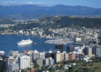
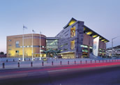

Wellington
Described as a village with skyscrapers, Wellington is New Zealand's capital offering an unforgettable city experience. Located between a beautiful harbour and towering green hills, Wellington will surprise you with its cultural richness and vibrant atmosphere.
Wellington lays claim to being New Zealand's cultural capital. The city is home to the magnificent national museum, Te Papa. A huge building with literally too much to see in one day.
Other cultural attractions in the capital include a large selection of performing arts (Theatre, Opera and the New Zealand Symphony Orchestra). Another significant place to visit is the Archives New Zealand building (where New Zealand's founding document, the Treaty of Waitangi, is located).
Whether you enjoy a leisurely-paced stroll along the beautiful coastline or an energy-sapping day of shopping, Wellington will accommodate your needs - and some.